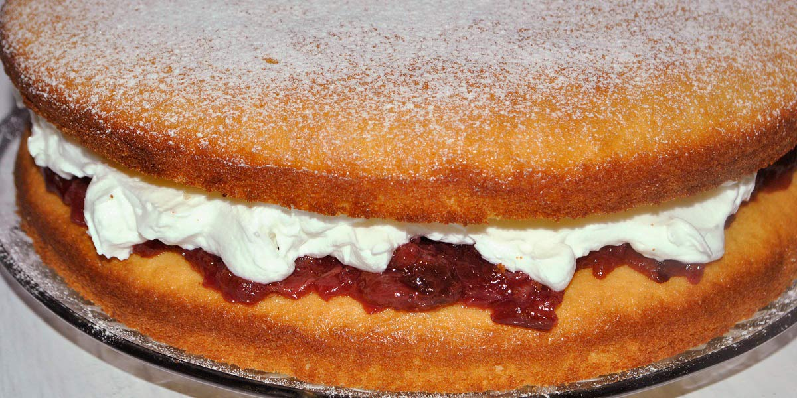

Victoria Sponge
Recipe Specification
Ingredients List
| Ingredients | Quantity |
|---|---|
| Self-raising Flour | 225g |
| Unsalted Butter | 325g |
| Caster Sugar | 225g |
| Medium Eggs | 4x1 |
| Baking Powder | 1 tsp |
| Strawberry Jam | 150g |
| Milk | 30ml |
| Vanilla Essence | 1 tsp |
| Icing Sugar | 150g |
Yield: 8-10 portions
Preparation
- Sift flour and baking powder in bowl.
- Place 225g of butter in the microwave for 20-30 second until it’s soft but not melted.
- Use an electric whisk to cream sugar and butter together. Whisk until butter is lighter in complexion.
- Line a two 20cm spring form baking tins with grease proof paper.
- Add one egg at a time to the creamed butter/sugar and whisk until all eggs are combined.
- Add flour to bowl and whisk in on a slow setting to begin with. Increase speed once flours is combined and add milk before mixing for 1-2 minutes.
- Add cake batter equally to both cake tins and spread out evenly.
- Place remaining butter in the microwave and warm for 10-15 seconds until soft.
- Add vanilla essence to butter and sift in 140g of icing sugar. Use an electric whisk and mix on a slow setting until all icing sugar is combined. Turn up the speed and whisk until pale and fluffy. Transfer to piping bag with 1cm diameter nozzle to it.
- Pre-heat oven to 165’C.
Cooking Instructions
- Place cake tins in the oven for 20-25 minutes. Use a skewer to check if the centre is cooked
- Allow the cake to cool and remove from cake tins.
- Spread strawberry jam over the top of first sponge and top jam with piped butter icing.
- Place the second sponge on top on the butter icing and finish off the cake by dusting with icing sugar.

Serving Suggestions
Serve with a cup of tea.
Storing instructions
Cover with clingfilm and place in the fridge. Consume with 4 days of making.